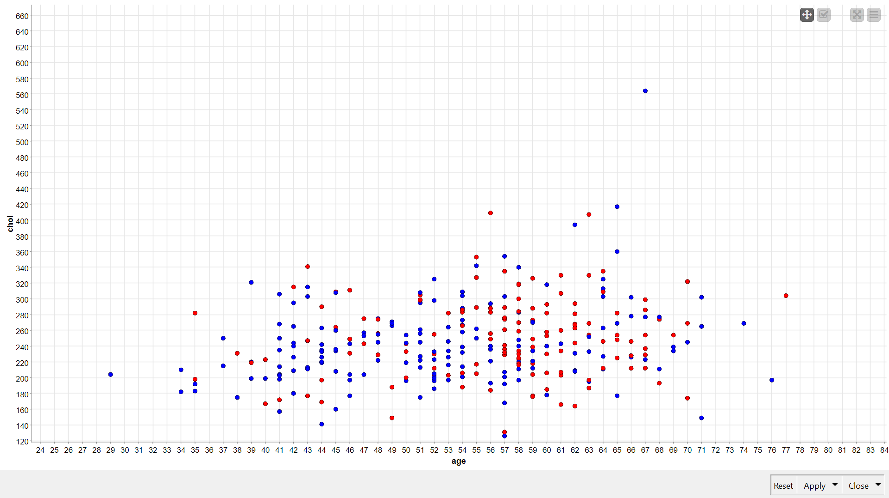
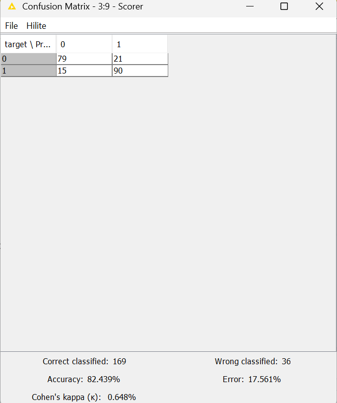

Naive Bayes#
Implementasi Naive Bayes untuk Prediksi Penyakit Jantung Menggunakan KNIME#
Dataset yang digunakan dalam penelitian ini adalah dataset kesehatan jantung yang bersumber dari file heart.xlsx. Dataset ini memberikan gambaran klinis mengenai kondisi fisik pasien yang digunakan untuk melatih model klasifikasi. Tujuannya adalah untuk menganalisis faktor-faktor medis yang berkontribusi terhadap penyakit jantung. Membangun model klasifikasi yang mampu memprediksi status kesehatan pasien (Sehat/Sakit) berdasarkan atribut klinis. Mengukur tingkat akurasi dan efektivitas algoritma Naive Bayes pada dataset.
Jumlah Sampel: 1025 entri data (baris).
Jumlah Fitur: 14 kolom (13 atribut medis dan 1 kolom target).
Karakteristik Data: Terdiri dari kombinasi antara data numerik (seperti usia dan kadar kolesterol) dan data kategorikal (seperti jenis kelamin dan tipe nyeri dada).
Atribut Klinis (Fitur Pendukung)#
Age: Usia pasien (dalam tahun).
Sex: Jenis kelamin pasien (1 = Laki-laki, 0 = Perempuan).
CP (Chest Pain Type): Tipe nyeri dada yang dirasakan (Skala 0-3).
Trestbps: Tekanan darah saat istirahat (dalam mm Hg saat masuk rumah sakit).
Chol: Kadar kolesterol serum (dalam mg/dl).
Fbs (Fasting Blood Sugar): Kadar gula darah puasa > 120 mg/dl (1 = Benar, 0 = Salah).
Restecg: Hasil elektrokardiografi saat istirahat (Skala 0-2).
Thalach: Detak jantung maksimal yang dicapai pasien.
Exang: Angina (nyeri dada) yang dipicu oleh olahraga (1 = Ya, 0 = Tidak).
Oldpeak: Depresi ST yang diinduksi oleh olahraga relatif terhadap saat istirahat.\
Slope: Kemiringan segmen ST pada saat puncak latihan (Skala 0-2).
Ca: Jumlah pembuluh darah utama (0-3) yang diwarnai dengan fluoroskopi.
Thal: Hasil tes darah thalasemia (3 = Normal, 6 = Cacat tetap, 7 = Cacat yang dapat disembuhkan).
Target: Status penyakit jantung pasien. 0: Sehat (Tidak ada risiko/hasil negatif). 1: Sakit (Terindikasi penyakit jantung/hasil positif).
berikut adalah sumber datanya: https://www.kaggle.com/datasets/johnsmith88/heart-disease-dataset
Metodologi#

1. Input Data#
membaca file melalui Excel Reader
2. Pre-processing#
Number to Srting : Mengubah kolom target menjadi tipe data nominal agar bisa diklasifikasikan.
Normalizer : Melakukan standarisasi data numerik ke skala 0-1 untuk menghindari bias perbedaan satuan.
3. Data Splitting#
Membagi data menggunakan Table Partitioner dengan rasio 80% (Data Latih) dan 20% (Data Uji).
4. Modeling#
Melatih model menggunakan Naive Bayes Learner dan melakukan prediksi dengan Naive Bayes Predictor.
Visualisasi Data (Scatter Plot)#

Sumbu X (Horizontal): age (Usia).
Sumbu Y (Vertikal): chol (Kolesterol).
Titik Merah: Mewakili Target 0 (Pasien Sehat / Tidak ada risiko penyakit jantung).
Titik Biru: Mewakili Target 1 (Pasien Sakit / Ada risiko penyakit jantung).
Distribusi Usia: Pasien yang sakit (biru) terlihat mulai muncul secara signifikan sejak usia 30-an ke atas, namun kepadatan tertinggi berada di rentang usia 40 hingga 60 tahun. Variabel Kolesterol: Terdapat satu titik biru (sakit) yang merupakan outlier dengan kadar kolesterol sangat tinggi (di atas 540) pada usia sekitar 67 tahun. Sementara itu, banyak titik merah (sehat) yang memiliki kadar kolesterol tinggi (240-300), yang menunjukkan bahwa kolesterol bukan satu-satunya faktor penentu penyakit jantung. Pola Data: Karena titik merah dan biru saling bertumpukan di area tengah (kolesterol 200-300 dan usia 40-60), hal ini memperkuat alasan mengapa kita membutuhkan algoritma Naive Bayes. Algoritma ini tidak hanya melihat dua variabel ini saja, tapi mengombinasikan belasan variabel lain untuk mendapatkan probabilitas yang lebih akurat.
Hasil#
Confusion Matrix (Detail Prediksi)#

Akurasi (Accuracy): 82,439%. Ini berarti dari 100 pasien, model berhasil menebak dengan benar sekitar 82 orang.
Jumlah Benar (Correct Classified): 169 data.
Jumlah Salah (Wrong Classified): 36 data. - Tingkat Kesalahan (Error): 17,561%.
Cohen’s Kappa: 0,648 (Menunjukkan tingkat kesepakatan yang kuat antara prediksi dan kenyataan, di atas faktor kebetulan).
Model klasifikasi ini memiliki kemampuan yang sangat baik dalam mendeteksi pasien yang sakit jantung (90 dari 105 pasien sakit berhasil ditemukan). Angka akurasi sebesar 82,4% menunjukkan bahwa algoritma Naive Bayes, didukung dengan proses normalisasi data, sangat efektif untuk diimplementasikan pada dataset medis ini sebagai alat bantu diagnosa awal.